BaseDeploy：服务于XEdu的模型部署工具
模型部署是AI应用的重要一环，因其涉及的框架量大、推理代码风格不一等问题，往往会对初学者的上手造成一定的难度。为此，XEdu团队推出了模型部署工具BaseDeploy，其代码风格向MMEdu对齐，通过对推理核心代码的封装，目标是用户能够更加专注于科创作品功能的设计，而将AI模块作为接口的黑盒，能够对其返回的结果进行二次创作。当前，BaseDeploy主要支持onnxruntime的部署形式，只要将模型文件转换为onnx格式，即可轻松部署到绝大多数硬件上。
onnxruntime介绍：https://github.com/microsoft/onnxruntime
文档涉及的部分代码见XEdu帮助文档配套项目集：https://www.openinnolab.org.cn/pjlab/project?id=64f54348e71e656a521b0cb5&sc=645caab8a8efa334b3f0eb24#public
基本功能说明
BaseDeploy提供多种便于模型部署的函数，包括了推理与相关库启动部署。
推理功能
首先BaseDeploy对不同任务的模型进行统一的推理管理，对于用户来说仅需更换onnx模型的路径，BaseDeploy会自动匹配对应的任务类型，并将推理和显示的内部流程进行封装。
pred_onx = model.inference(input_data, show, get_img, score, show_path)
参数说明如下：
input_data: 可以为图片路径，文件夹路径，BaseDT预处理后的路径，CV2摄像头拍摄的图片。
show：是否在Jupyter界面中显示图片，默认为：False。
get_img：得到回传图片做二次操作，默认为：None，可选参数为pil和cv2。
score：识别阈值，无论是分类任务还是检测任务，高于score的置信度的图片才会被输出到推理结果，默认为0.65。
show_path：是否显示图片路径，默认为False。
返回参数说明
通过BaseDeploy的模型完成推理后，输出的格式与onnxruntime推理保持一致，用户可自行进行推理结果后处理操作或使用内置的model.print_result函数进行推理结果格式化。
格式化推理结果
为了便于用户查看推理结果，BaseDeploy提供model.print_result函数供用户进行推理结果格式化操作。
result = model.print_result(pred_onx)
参数说明如下：
pred_onx：model.inference函数对输入进行推理后返回的输出。
图像分类 对于目标检测任务字典保存的键为
标签，置信度，预测结果，推理结果result如下：
result = [{'标签': 215, '置信度': 0.23003787, '预测结果': 'Brittany spaniel'}]
result 为一个列表，其长度为1，列表中的值为字典，字典中包含这张图片推理后的标签、置信度和预测结果。
目标检测
对于目标检测任务字典保存的键为标签，置信度，预测结果，坐标，推理结果result如下：
result = [{'标签': 67, '置信度': 0.8131059408187866, '预测结果': 'cell phone', '坐标': {'x1': 229, 'y1': 113, 'x2': 352, 'y2': 441}}, {'标签': 67, '置信度': 0.7117214202880859, '预测结果': 'cell phone', '坐标': {'x1': 443, 'y1': 103, 'x2': 615, 'y2': 447}}, {'标签': 67, '置信度': 0.6600658297538757, '预测结果': 'cell phone', '坐标': {'x1': 25, 'y1': 142, 'x2': 144, 'y2': 479}}]
result 为一个列表，其长度为3，可通过result[0]，result[1]，result[2]得到，列表中的值为字典，字典中包含一个检测框中的标签、置信度、预测结果和检测框的四角坐标。 示例，打印result中的预测结果：
for item in result:
print(item['预测结果'])
文件夹推理
BaseDeploy同时提供对文件夹中的图片推理的功能。
import BaseDeploy as bd
model = bd(model_path)
pred_onx = model.inference(folder_path)
参数说明如下：
model_path：ONNX模型的路径。
folder_path：待推理的文件夹路径，文件夹中的文件需是图片。
图像分类
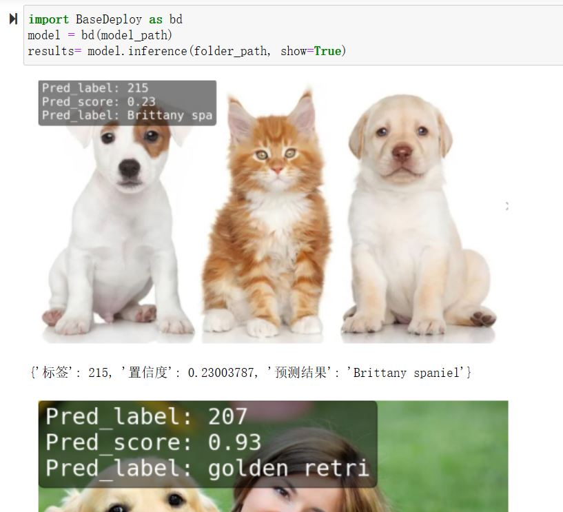
目标检测
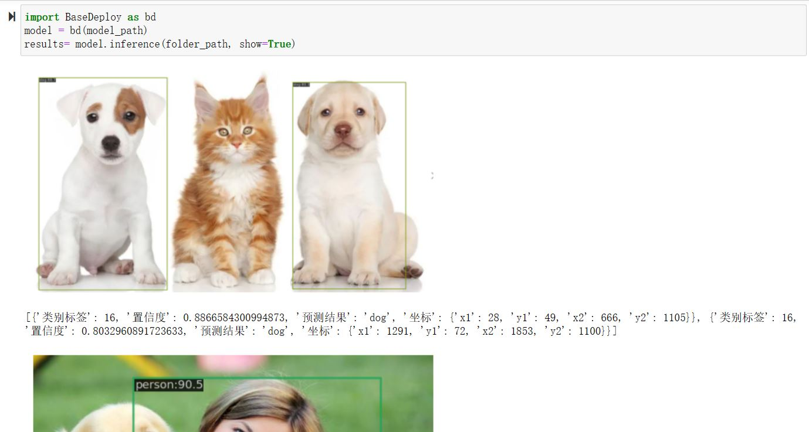
可视化效果保存
文件推理后，可以保存在本地。将show_path设置为True，即可以文件名+推理结果作为最终的消息回显（该功能仅对以img_path路径形式传入的方式有效）
import BaseDeploy as bd
model = bd(model_path)
result = model.inference(img_path, show=True, show_path=True)
图像分类
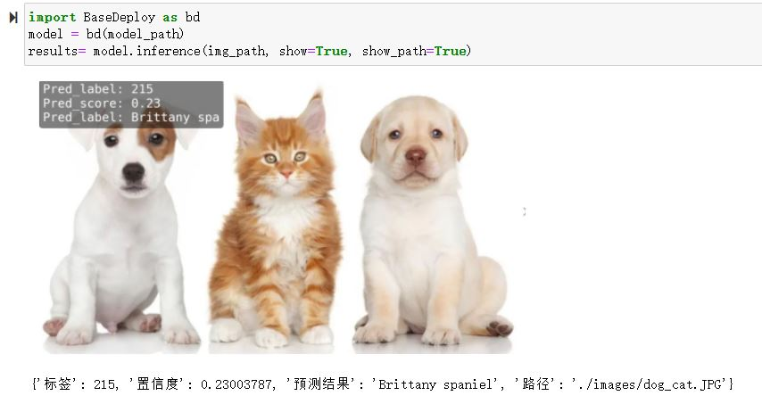
目标检测
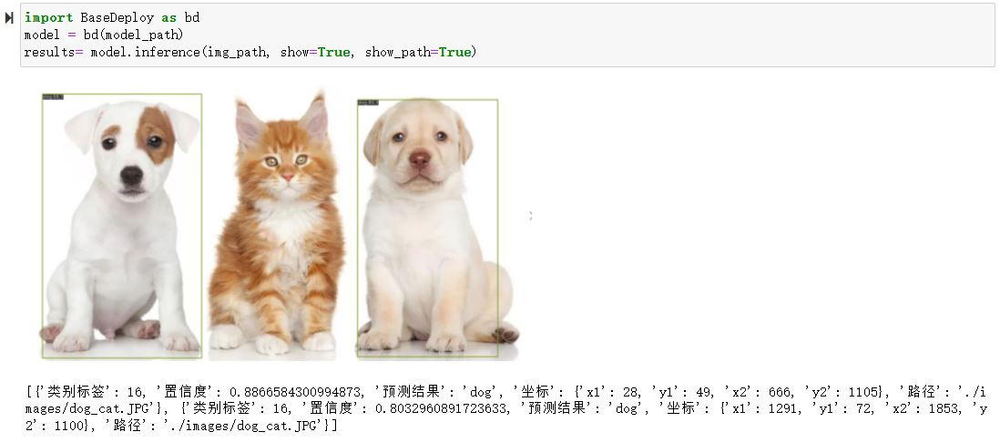
可视化效果获取
这里的
get_img='pil/cv2'与前面的show_path=True的区别在于：前者以变量传参形式返回，不保存在本地磁盘；后者以保存路径字符串返回，方便调试查看。前者更适合在项目开发中使用。
如果您想对推理结果图进行一部分操作（比如部署时希望在行空板屏幕上显示推理结果图），那么可以使用如下代码：
加入get_img参数，默认为None，可选参数为pil和cv2，matplotlib和OpenCV是两个常用的图像梳理库，目的是用户可以通过得到的图片二次创作。
import BaseDeploy as bd
model = bd(model_path)
result, img = model.inference(img_path, get_img='pil')
from matplotlib import pyplot as plt
plt.imshow(img)
plt.axis('off')
plt.show()
参数说明如下：
model_path：ONNX模型的路径。
img_path：待推理的图片路径。
get_img：model.inference中内置的参数，设为pil表示回传的图片可供pil显示。
返回形式1：PIL方式
PIL方式适合Jupyter中进行交互，下面是相关示例说明。
图像分类
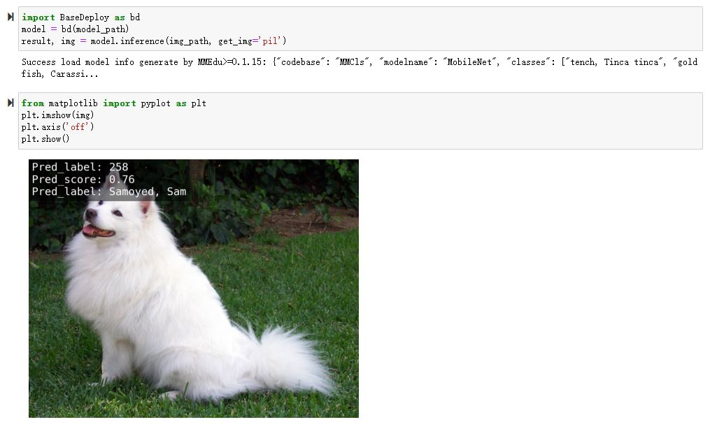
目标检测

返回形式2：cv2方式
cv2方式适合调用屏幕显示等操作。
import BaseDeploy as bd
model = bd(model_path)
result, img = model.inference(img_path, get_img='cv2')
import cv2
cv2.imshow("Image", img)
cv2.waitKey(0)
cv2.destroyAllWindows()
参数说明如下：
model_path：ONNX模型的路径。
img_path：待推理的图片路径。
get_img：model.inference中内置的参数，设为cv2表示回传的图片可供cv2显示。
图像分类
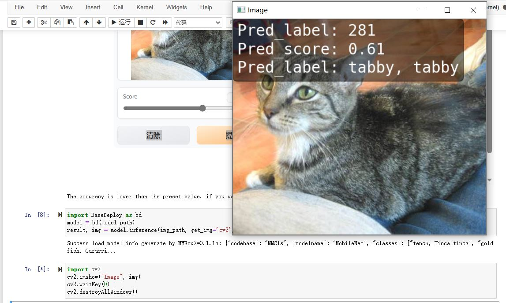
目标检测

强大的ONNX模型尺寸解析能力
BaseDeploy为适配图像任务，可自动解析未经XEdu标记的ONNX模型的输入张量尺寸，并进行图像预处理和输出后处理，输出结果将不会带有类别信息。学习资源库提供了部分ONNX模型下载链接。
import BaseDeploy as bd
model = bd(model_path)
result = model.inference(img_path)
参数说明如下：
model_path：ONNX模型的路径，目前仅支持图像分类和目标检测的模型解析。
img_path：待推理的图片路径。
图像分类

目标检测

通用的onnx推理能力
BaseDeploy还提供diy_inference函数，可以推理任意的ONNX模型，这里并不强调是由XEdu转换而来的模型，只要是ONNX格式，均可以类似的代码风格进行推理。但是需要注意，不同的任务对应的前处理、后处理不同，需要用户自行实现。
import BaseDeploy as bd
model = bd(model_path)
result = model.diy_inference(input_data)
参数说明如下：
model_path：ONNX模型的路径。
input_data：用户自定义前处理好后的张量，可以是任何数据，不一定是图像数据，请将其保持与模型输入节点需要的张量形状一致。
返回值result即
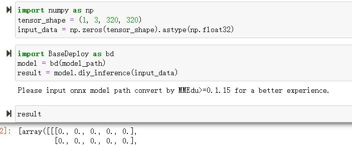
与其他库配合的部署
BaseDeploy通过model.run()调用内置的多种部署工具，包括Gradio，EasyAPI，SIoT和PywebIO等，实现模型即黑箱的功能，把AI推理简单的视作一个函数。
Gradio
Gradio 是一种简单易用的Web界面工具，它可以让你快速地将模型部署到Web应用程序中。BaseDeploy通过对Gradio进行封装，一键启动。为了保证BaseDeploy的轻量性，Gradio库在安装时并不会被同步安装，如想使用该功能在使用前请使用pip3 install gradio进行依赖库的安装。
BaseDeploy支持在载入模型后使用run_gradio函数一键启动，启动后输入界面可选择两个参数，一是点击后选择路径，二是设置score，低于score的图片将不会被绘制，详情可见运行后日志。
import BaseDeploy as bd
model = bd(model_path)
model.run_gradio()
图像分类

目标检测

FastAPI
FastAPI 是一个Python Web 框架，用于构建高性能的 Web 应用程序和 API。它是基于 Python 类型提示和异步编程的优势，提供了快速、易于使用和具有强大功能的开发体验。BaseDeploy通过对FastAPI的集成，可一键启动接口，并支持json或file的回传形式，用户可自行选择。
值得注意的是，由于FastAPI本身的限制，目前暂不支持在Jupyter中调用该函数。
基本方法
import BaseDeploy as bd
model = bd(model_path)
model.run_fastapi()
拓展功能
run_fastapi函数的可设置参数有：port和mode。下面是这两参数的使用解释。
port：设置启动FastAPI的端口号，默认为：1956。
mode: 设置FastAPI的运行模式，可选参数为json和img，代表回传的内容为推理结果或推理后绘制的图片，于用户角度即为绘制图像操作在上位机还是下位机完成。
score：设置绘图阈值，若高于阈值，才进行绘图操作，默认为：0.65。
运行后出现下图所示的内容，即代表FastAPI启动成功。
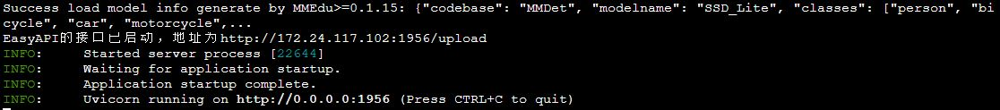
如何调用接口
在用户端如需调用FastAPI启动的接口，仅需设置接口地址url和图片路径img_path。
import requests
url = "http://192.168.31.38:1956/upload"
img_path = ''
files = {'files': open(img_path, 'rb')}
result = requests.post(url=url, files=files)
图像分类

目标检测

SIoT
SIoT为“虚谷物联”项目的核心软件，是为了帮助中小学生理解物联网原理，并且能够基于物联网技术开发各种创意应用。因为其重点关注物联网数据的收集和导出，是采集科学数据的最好选择之一。
BaseDeploy通过对SIoT进行封装，支持一键将后端推理从本地迁移至启动SIoT推理服务的程序。
要想使用SIoT，需要一个SIoT服务端的IP地址，以及使用BaseDeploy启动监听和传输推理的服务。
服务端 服务端需要按照
BaseDeploy的导入模型的方式定义一个模型，并使用use_siot函数启动siot的消息监听功能。默认监听本地的ip地址127.0.0.1，如需更换监听的ip地址，可设置model.run_siot(ip=ip地址)
import BaseDeploy as bd
model = bd(model_path)
model.run_siot()
用户端对服务端进行访问时，服务端也会同步打印推理结果，便于用户检查连接状况等。
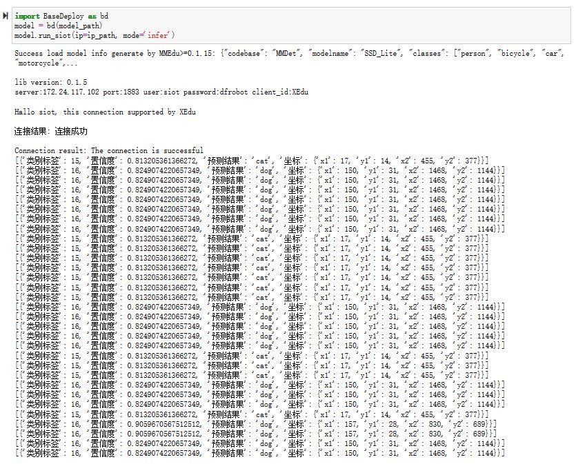
PywebIO
PyWebIO是一个用于构建交互式Web应用程序的Python库。它提供了一组简单且直观的函数和装饰器，使得开发人员可以在Web浏览器中使用Python来创建丰富的用户界面和交互体验，而无需编写HTML、CSS或JavaScript代码。BaseDeploy通过对PywebIO的封装，支持一键启动推理服务界面。
值得注意的是，由于Pywebio本身的限制，目前暂不支持在Jupyter中调用该函数。
基本方法
import BaseDeploy as bd
model = bd(model_path)
model.run_pywebio()
拓展功能
run_pywebio函数的可设置参数有：port。下面是参数的使用解释：
port：设置启动PywebIO的端口号，默认为：1956。
运行后出现下图所示的内容，即代表PywebIO启动成功。
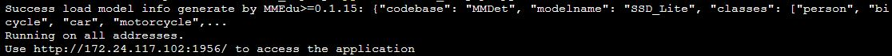
推理示例

Mind+中的BaseDeploy积木块
使用Mind+V1.7.2及以上版本，在python模式用户库中加载此扩展，AI模型部署工具库。
Gitee链接：https://gitee.com/liliang9693/ext-BaseDeploy
使用说明
第一步：加载积木库
如果联网情况下，打开Mind+用户库粘贴本仓库的链接即可加载：

如果电脑未联网，则可以下载本仓库的文件，然后打开Mind+用户库选择导入用户库，选择
.mpext文件即可


第二步：安装python库
打开库管理，输入BaseDeploy运行，提示successfully即可。
注：WARNING是提醒，可以忽略；请及时更新BaseDeploy和BaseDT用户库，以获得更稳定、更强大的模型部署使用体验。
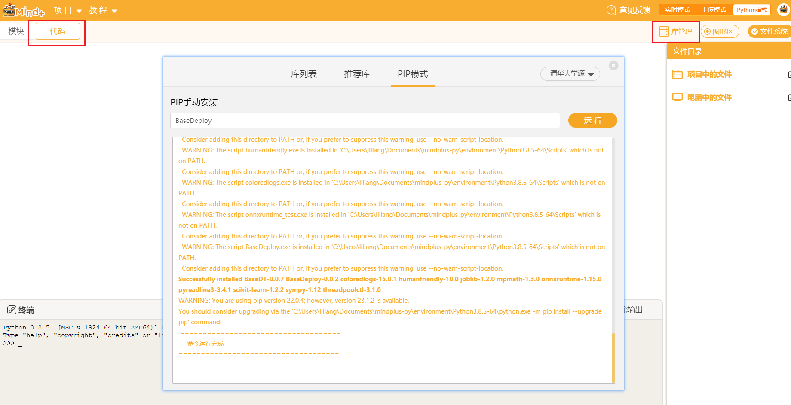
第三步：导入模型
将onnx模型文件拖到项目中的文件中。
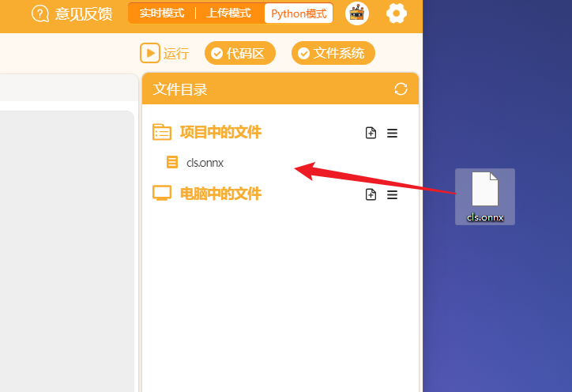
第四步：开始编程！
至此，即可拖动积木块开始快乐编程啦，运行示例如下：
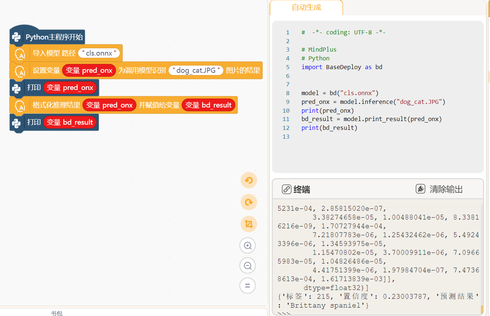
参考链接
Gradio：https://github.com/gradio-app/gradio
FastAPI：https://github.com/tiangolo/fastapi
SIOT：https://github.com/vvlink/SIoT
PywebIO：https://github.com/pywebio/PyWebIO
Flask：https://github.com/pallets/flask
Mind+：https://mindplus.cc/